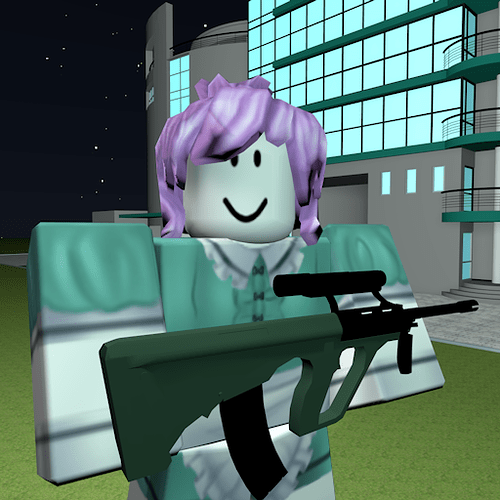
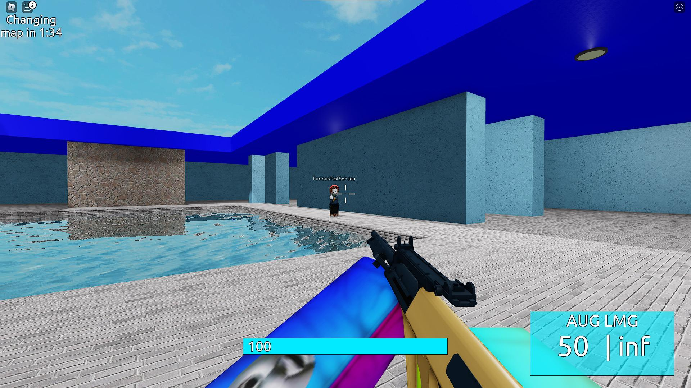
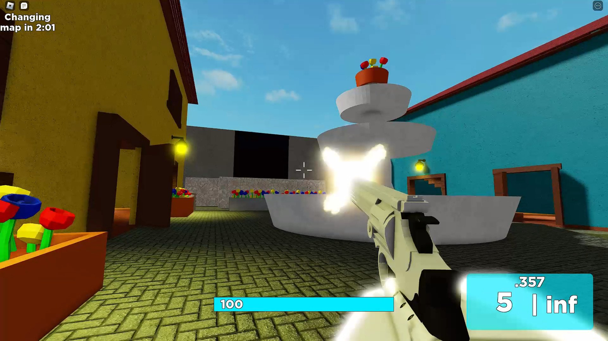
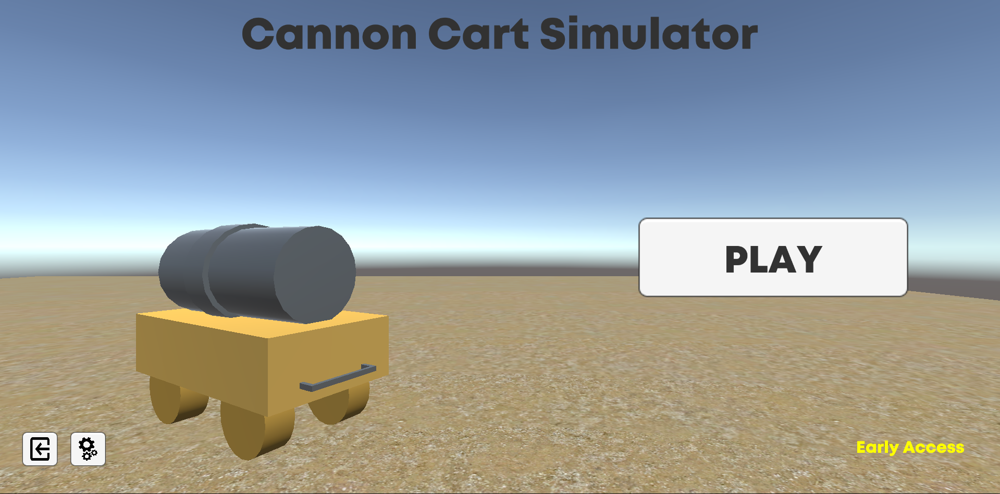
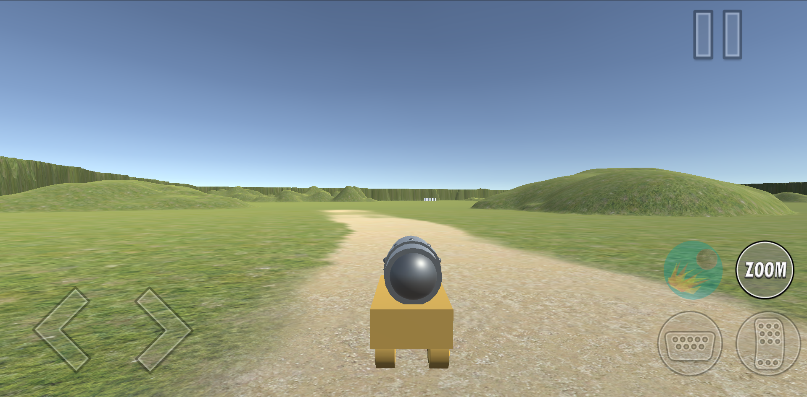
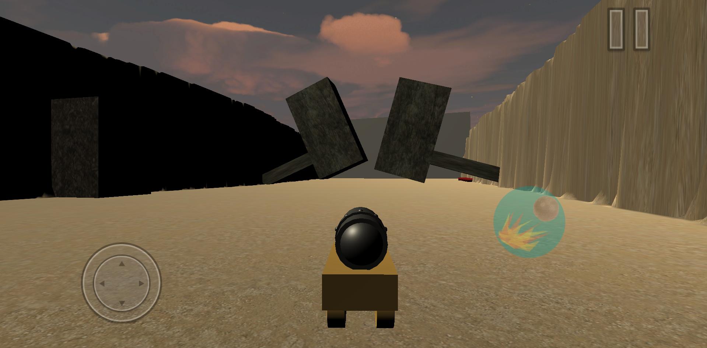
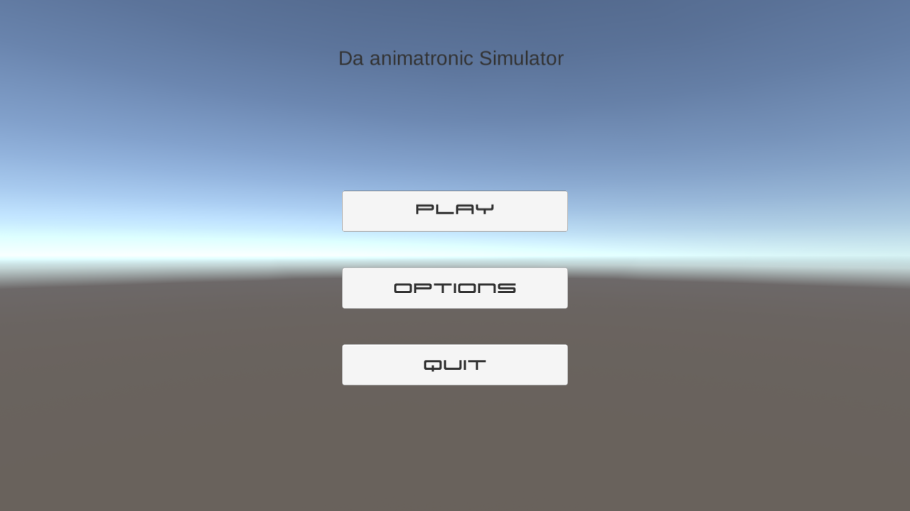
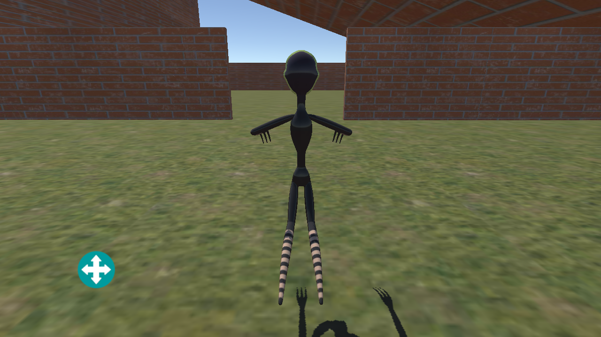

Parfois j'aime bien créer des petits jeux et modifier le code source de jeux existants.
Projet de restauration d'une version beta d'Indie Cross, un mod du jeu Friday Night Funkin'
Un mod Friday Night Funkin' sur le thème de Five Nights at Freddy's
Un jeu de tir à la première personne sur Roblox rempli de memes et de références d'Internet



Un jeu mobile créé sur Unity ou vous contrôlez une charette à canon



Un de mes tout premiers jeux sur Unity !
C'est un jeu mobile ou vous pouvez jouer en tant qu'animatronics de Five Nights at Freddy's

